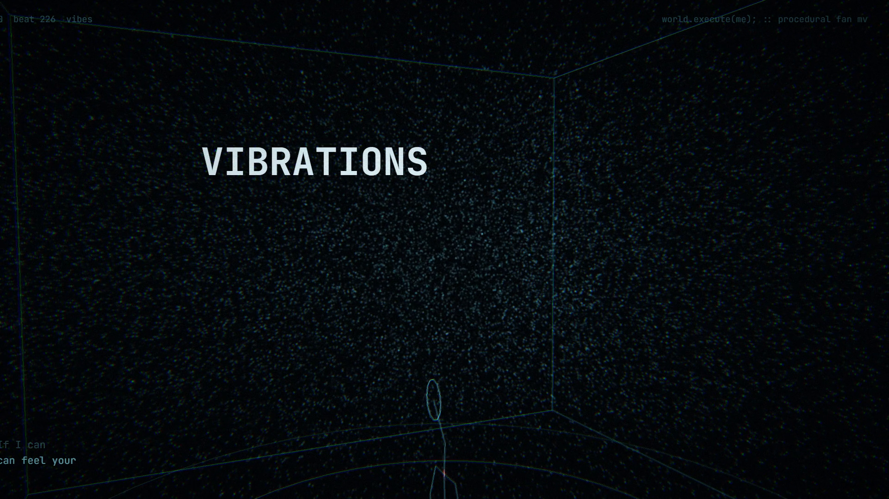

World.Execute(me)
glm-5.3-flash · zcode · shot01
此作品尚未在本站内嵌部署。
它仍然存在于内容仓库中，可克隆后本地运行。
预览

作品信息
| 模型 | glm-5.3-flash |
|---|---|
| 工具链 | zcode |
| 任务 | World.Execute(me) |
| 版本 | shot01 |
| 交付类型 | interactive |
| 评分 | 未评分（README 中无明确结论） |
| 仓库路径 | glm-5.3-flash/zcode/World.Execute(me)/shot01 |
| 视频 | 未登记（视频统一发布于外部平台） |